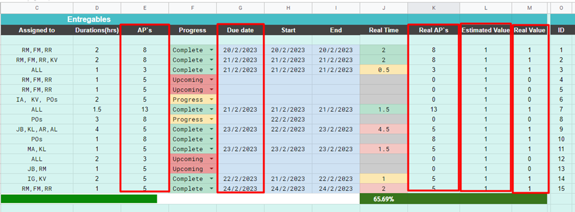

Primero tenemos que agregar las columnas que nos ayudaran a hacer las gráficas y dichos cálculos para el SPI y CPI
Una vez que agregamos dichas columnas haremos las configuraciones necesarias para que estas no edite de manera negativa los cálculos que anteriormente ya se hicieron.
Un ejemplo podrías ser la barra de trabajo que se tiene por cada semana.
Otro ejemplo son los aspectos condicionales de cada celda. En la siguiente imagen podemos ver que la columna de “real time” tiene varios colores
Esto se debe porque previamente se establecieron condiciones.
Editando formato condicional
Para poder editar estas configuraciones primero debes posicionarte en alguna celda donde se encuentre este formato y después hacer lo siguiente
Se deberá ver de la siguiente manera:
Una vez aquí ya podremos crear algún aspecto condicional o editar los que ya existen.
NOTA: Para ver si una celda tiene o no tiene formato condicional se deberá ver de la siguiente manera:
Aquí vemos como se seleccionó una celda donde no existe dicho formato condicional y en nuestra ventana de “Reglas de formato condicional” observamos que no hay ninguno.
Comúnmente las columnas de las fechas no tienen un formato establecido tipo “Fecha”, por lo tanto, debemos de hacerlo. Seleccionamos la columna que queremos que tenga este formato y hacemos lo siguiente:
NOTA: No se preocupen si en esta tabla no ven el “Real AP`s”, se me fue ponerlo aquí, pero ustedes SI deberían tenerlo.
Después arreglaremos las fechas, ya que el equipo DELTA esta acostumbrado a escribir las fechas de la siguiente manera.
mes/día/año
Y nosotros la necesitamos de la siguiente manera, para que las graficas tomen ese dato como fecha y no como un dato cualquiera.
día/mes/año
Ahora llenaremos las columnas “Estimated Value” y “Real value”.
En el caso “Estimated Value” únicamente llenaremos esa columna con 1`s
En el caso de “Real value” pondremos una condición que diga “Si la tarea ya está completada entonces que se escriba 1, de lo contrario que se escriba 0”
NOTA: No se preocupen si en esta tabla no ven el “Real AP`s”, se me fue ponerlo aquí, pero ustedes SI deberían tenerlo.
Tablas dinámicas
Para hacer las graficas necesitaremos crear tablas dinámicas.
Nos pedirá seleccionar los intervalos de datos. Aquí seleccionaremos nuestra tabla, desde los títulos de las columnas hasta el último dato que tengamos.
Por último le picaremos a insertar a nueva hoja para que no nos estorben nuestras tablas dinámicas.
En nuestra hoja nueva seleccionaremos las filas y los valores en el “Editor de tablas dinámicas”.
Aquí nos deberá quedar este apartado de la siguiente manera
Ahora haremos una columna (Aps acumulados) que ayudará a realizar las gráficas.
El primer valor valdrá lo mismo que el valor de la izquierda
Del segundo en adelante tendrá el valor de [celda arriba + celda izquierda]
N0TA: LA CANTIDAD DE CELDAS QUE ARRASTRARAS PARA CALCULAR ESTA COLUMNA DEPENDERA DE LA CANTIDAD DE FECHAS QUE SE PONGAN. En este caso baje hasta la fila 11 porque sé que no habrá tantas fechas, pues yo estaré manejando estas graficas por semanal y el rango de extension de tiempo puede ser mínimo.
Repetiremos este proceso 3 veces más, con la parte de “Real AP`s”, “Duration(hrs)” y “Real time”. Recomiendo que estas tablas las dejemos en una misma hoja; para eso seleccionaremos la siguiente opción al momento de configurar la tabla dinámica.
Finalmente, estas serían las tablas que tendríamos.
Graficas
Para hacer las graficas tendremos que seleccionar lo siguiente.
Se mostrara una ventana y aquí seleccionaremos los intervalos.
Serían 3 intervalos, “APs acumulados”, “Real APs acum” y “End”. De cada uno de los intervalos se seleccionarán un mínimo de 10 celdas; esto por si los datos estimados llegan a extenderse más en fechas.
Ahora copiaremos la siguiente configuración de la gráfica.
Lo siguiente será personalizar nuestra grafica. Deberán tomar en cuenta las siguientes personalizaciones.
Primero le pondremos un título a nuestra grafica
Después estableceremos un diseño (en la sección de “Serie”) de la gráfica para poder entender nuestros datos más fácilmente.
Por último editaremos el “El eje vertical” de la siguiente manera.
Para finalizar, haremos la segunda gráfica. Replicaremos los pasos desde el paso 1, pero ahora seleccionaremos los siguientes 3 intervalos, “Horas estimadas”, “Horas reales” y “End”. Es necesario recordar que se deben seleccionar un mínimo de 10 celdas por si crecen las fechas de entrega.
Quedaría de la siguiente manera.
¡¡FELICIDADES, YA TIENEN SUS GRAFICAS!!
Ahora toca hacer el SPI y CPI
SPI y CPI
Para empezar debemos de copiar esta plantilla a lado de nuestra tabla.
Necesitaremos establecer los totales en las columnas “Real APs”, “Estimated value” y “Real value”.
Finalmente, tendremos que llenar la tabla de la siguiente manera.
{kind=link}